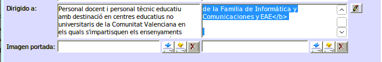

Fons Social Europeu (FSE)
En aquest document vo detallem quin és el text que cal posar en les formacions que estan cofinançades pel Fons Social Europeu (FSE).
És important que abans d'enviar-nos qualsevol formació a validar tingueu en compte les següent coses:
Assegureu-se que el text és el correcte
- Tingueu en compte la família profesional quan poseu el codi i que coincidisca amb la família profesional de la formació.
- Respecteu les normes d'estil que marca la Subdirecció General de Formació del Professorat. Les podeu trobar ací: Normes d'estil
Important
Cal eliminar tot text en html, més enllà de l'especificat per a afegir l'imatge del fons social europeu. Utilitzeu de base la formació 19FP43CF144 (Didàctica).
OBSERVACIONS
Es detallen les especificitats en el calendari, sessions síncrones, asíncrones, materials, etc.
Important
Este text és un example de formació online amb FSE. Si no és FSE no cal posar els logos.
Valencià
<img src=" https://portal.edu.gva.es/cefirefp/wp-content/uploads/sites/188/2023/10/ES-Cofinanciado-por-la-Union-Europea_POS.jpg" width="298" height="68" alt="Fondo Social Europeo"><br>
<b>Aquesta activitat formativa està cofinançada pel Fons Social Europeu. L'FSE inverteix en el teu futur</b>
El curs es realitzarà en la modalitat a distància. La realització de totes les tasques és obligatòria per obtindre la certificació. Serà obligatori accedir a l'aula virtual del curs durant els tres primers dies des de l'inici.
<img src="https://portal.edu.gva.es/cefirefp/wp-content/uploads/sites/188/2023/10/ES-Cofinanciado-por-la-Union-Europea_POS.jpg" width="298" height="68" alt="Fondo Social Europeo"><br>
<b>Esta actividad formativa está cofinanciada por el Fondo Social Europeo. El FSE invierte en tu futuro</b>
El curso se realizará en la modalidad a distancia. La realización de todas las tareas es obligatoria para obtener la certificación. Será obligatorio acceder al aula virtual del curso durante los tres primeros días desde el inicio.
CONDICIONS
Valencià
1. Acompliment d'un lloc de treball relacionat directament amb la temàtica de l'activitat
2. Professorat d'especialitats docents relacionades directament amb la temàtica de l'activitat
3. Ordre d'inscripció seguint el següent criteri:
Personal docent en actiu en centres sostinguts amb fons públics. (De titularitat pública i privats concertats. Art. 108 LOE 2/2006)
Personal tècnic educatiu en actiu en centres sostinguts amb fons públics. (De titularitat pública i privats concertats. Art. 108 LOE 2/2006)
Personal inscrit en alguna de les bosses de personal docent de la Conselleria d'Educació, Universitats i Ocupació
Resta del professorat
Castellà
1. Desempeño de un puesto de trabajo relacionado directamente con la temática de la actividad
2. Profesorado de especialidades docentes relacionadas directamente con la temática de la actividad
3. Orden de inscripción siguiendo el siguiente criterio:
Personal docente en activo en centros sostenidos con fondos públicos. (De titularidad pública y privados concertados. Art. 108 LOE 2/2006)
Personal técnico educativo en activo en centros sostenidos con fondos públicos. (De titularidad pública y privados concertados. Art. 108 LOE 2/2006)
Personal inscrito en alguna de las bolsas de personal docente de la Conselleria de Educación, Universidades y Empleo
Resto del profesorado
DIRIGIDO A
Es detallen en cas que les activitats de formació estiguen destinades a professorat d'etapes determinades o col·lectius específics.
Important
Cal cambiar la família d'informàtica i comunicacions per la que corresponga a la formació que es va a validar.
Valencià
Personal docent i personal tècnic educatiu amb destinació en centres educatius no universitaris de la Comunitat Valenciana en els quals s'impartisquen els ensenyaments regulats per la Llei orgànica d'Educació
Personal docent i personal tècnic educatiu que preste servicis tècnics de suport educatiu als centres indicats en l'apartat anterior
Personal que haja finalitzat els graus i màster que conduïxen a l'obtenció de la titulació docent, sempre que es troben inscrits en alguna de les bosses de personal docent de la Conselleria d'Educació, Universitats i Ocupació i este personal no supose més del 50% de participació en l'activitat
REQUISITS ESPECÍFICS
<b>Professorat de Formació Professional de la Família d'Informàtica i Comunicacions</b>
Personal docente y personal técnico educativo con destino en centros educativos no universitarios de la Comunitat Valenciana en los que se impartan las enseñanzas reguladas por la Ley Orgánica de Educación
Personal docente y personal técnico educativo que presta servicios técnicos de apoyo educativo en los centros indicados en el apartado anterior
Personal que haya finalizado los grados y máster que conducen a la obtención de la titulación docente, siempre que se encuentran inscritos en alguna de las bolsas de personal docente de la CConselleria d'Educació, Universitats i Ocupació y este personal no suponga más del 50% de participación en la actividad
REQUISITOS ESPECÍFICOS
<b>Profesorado de Formación Profesional de la Familia de Informática y Comunicaciones</b>
BANERS
Important
Cal tenir com a mínim la versió 1.42.10 de Gesform, si no disposeu d'eixa formació caldrà que la canvieu. És important treballar sempre amb l'última versió. Els Banner caldrà posar-los en la carpeta corresponent
Els bàners ja no s'afegixen amb codi html, caldrà que afegir l'imatge directament la fitxa de la formació.

Per a pujar un baner cal fer clic sobre el botó de pujar fitxer, seleccionar la imatge i fer clic a "pujar fitxer" (és el botó blau)
Reviseu bé la formació
Els problemes més comuns que ens solem trobar són:
- Assegureu-se que la formació no té cap error d'ortografia, tant en el títol com en la descripció.
- Assegureu-se que heu afegit correctament la imatge correcta de la formació i que algun company l'ha validada correctament.
- El pressupost té que estar correctament especificat.
- No hi ha que posar centre coordinador mai.
- Heu de deixar al menys una setmana per a confirmar la formació.
- Reviseu bé les tarifes de la fitxa econòmica. Tarifes 2025.
- I el corresponent ANNEX. Annex Tarifes 2025.
Podeu utilitzar ferramentes com Salt (1) o Appertium per a revisar l'ortografia i la gramàtica de la formació.
 Sempre és recomanable utilitzar SALT abans que Appertium, Salt està basat en Appertium, els resultats seran semblants.
Sempre és recomanable utilitzar SALT abans que Appertium, Salt està basat en Appertium, els resultats seran semblants.
Important
Al perfil assegure-se d'agafar una formació que no herede ni continguts ni objectius, sino vos apareixerà al perfil de la vostra formació. Recordeu que Didàctica no té cap contingut ni objectiu (19FP43CF144), és la que s'ha utilitzat tradicionalment al CEFIRE de FP.
Altra informació
Podeu utilitzar el següent enllaç per a crear un baner (només formacions online de moment):